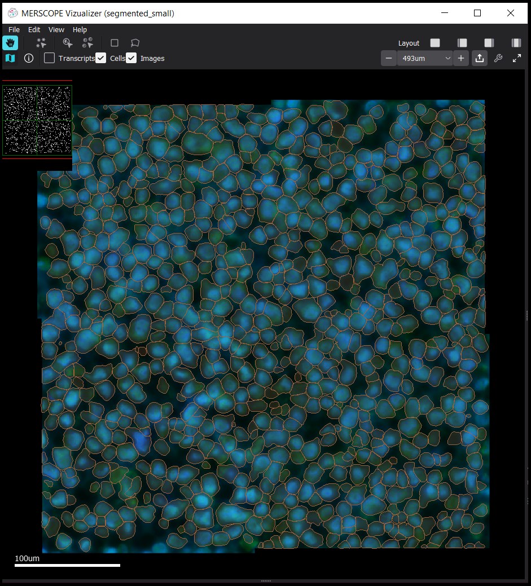

Example: Segmenting a Small Dataset Saved on a Local Hard Drive
Before Beginning: System Set Up
Windows 10 laptop computer (i7-1185G7 processor, 16 GB RAM)
Using Ubuntu 20.04 through the Windows Subsystem for Linux 2 (wsl2)
Python, pip, and venv installed in Ubuntu
The data produced by the MERSCOPE™ Image Processing Software was downloaded to the wsl2 home directory Download Data Files
The example segmentation algorithm json files were downloaded from github to the wsl2 home directory Download Algorithm Files
At the beginning of the analysis, the following data is saved in the home directory:
User Input
user@computer:~$ tree
Console Output
.
├── 202305010900_U2OS_small_set_VMSC00000
│ └── region_0
│ ├── 202305010900_U2OS_small_set_VMSC00000_region_0.vzg
│ ├── detected_transcripts.csv
│ ├── images
│ │ ├── manifest.json
│ │ ├── micron_to_mosaic_pixel_transform.csv
│ │ ├── mosaic_Cellbound1_z0.tif
│ │ ├── mosaic_Cellbound1_z1.tif
│ │ ├── mosaic_Cellbound1_z2.tif
│ │ ├── mosaic_Cellbound1_z3.tif
│ │ ├── mosaic_Cellbound1_z4.tif
│ │ ├── mosaic_Cellbound1_z5.tif
│ │ ├── mosaic_Cellbound1_z6.tif
│ │ ├── mosaic_Cellbound2_z0.tif
│ │ ├── mosaic_Cellbound2_z1.tif
│ │ ├── mosaic_Cellbound2_z2.tif
│ │ ├── mosaic_Cellbound2_z3.tif
│ │ ├── mosaic_Cellbound2_z4.tif
│ │ ├── mosaic_Cellbound2_z5.tif
│ │ ├── mosaic_Cellbound2_z6.tif
│ │ ├── mosaic_Cellbound3_z0.tif
│ │ ├── mosaic_Cellbound3_z1.tif
│ │ ├── mosaic_Cellbound3_z2.tif
│ │ ├── mosaic_Cellbound3_z3.tif
│ │ ├── mosaic_Cellbound3_z4.tif
│ │ ├── mosaic_Cellbound3_z5.tif
│ │ ├── mosaic_Cellbound3_z6.tif
│ │ ├── mosaic_DAPI_z0.tif
│ │ ├── mosaic_DAPI_z1.tif
│ │ ├── mosaic_DAPI_z2.tif
│ │ ├── mosaic_DAPI_z3.tif
│ │ ├── mosaic_DAPI_z4.tif
│ │ ├── mosaic_DAPI_z5.tif
│ │ ├── mosaic_DAPI_z6.tif
│ │ ├── mosaic_PolyT_z0.tif
│ │ ├── mosaic_PolyT_z1.tif
│ │ ├── mosaic_PolyT_z2.tif
│ │ ├── mosaic_PolyT_z3.tif
│ │ ├── mosaic_PolyT_z4.tif
│ │ ├── mosaic_PolyT_z5.tif
│ │ └── mosaic_PolyT_z6.tif
└── example_analysis_algorithm
├── cellpose_default_1_ZLevel.json
├── cellpose_default_3_ZLevel.json
├── cellpose_default_3_ZLevel_nuclei_only.json
└── watershed_default.json
4 directories, 43 files
In this example workflow, all of the analysis output files will be saved to ~/analysis_outputs.
Step 1: Install vpt in a Virtual Environment
User Input
user@computer:~$ python3 -m venv ~/.venv/vpt_env
user@computer:~$ source .venv/vpt_env/bin/activate
(vpt_env) user@computer:~$ pip install vpt[all]
Console Output
[ pip installation progress trimmed for brevity ]
Successfully installed MarkupSafe-2.1.2 Pillow-9.4.0 PyWavelets-1.4.1 absl-py-1.4.0 affine-2.4.0 aiobotocore-1.4.2
aiohttp-3.8.4 aioitertools-0.11.0 aiosignal-1.3.1 astunparse-1.6.3 async-timeout-4.0.2 attrs-22.2.0 boto3-1.17.0
botocore-1.20.106 cachetools-5.3.0 cellpose-1.0.2 certifi-2022.12.7 cffi-1.15.1 charset-normalizer-3.0.1 click-8.1.3
click-plugins-1.1.1 cligj-0.7.2 cloudpickle-2.2.1 contourpy-1.0.7 csbdeep-0.7.3 cycler-0.11.0 dask-2022.9.0
decorator-5.1.1 distributed-2022.9.0 fastremap-1.13.4 fiona-1.9.1 flatbuffers-1.12 fonttools-4.38.0 frozenlist-1.3.3
fsspec-2021.10.0 gast-0.4.0 gcsfs-2021.10.0 geojson-2.5.0 geopandas-0.12.1 google-auth-2.16.1 google-auth-oauthlib-0.4.6
google-pasta-0.2.0 grpcio-1.51.3 h5py-3.7.0 heapdict-1.0.1 idna-3.4 imageio-2.25.1 jinja2-3.1.2 jmespath-0.10.0
keras-2.9.0 keras-preprocessing-1.1.2 kiwisolver-1.4.4 libclang-15.0.6.1 llvmlite-0.39.1 locket-1.0.0 markdown-3.4.1
matplotlib-3.7.0 msgpack-1.0.4 multidict-6.0.4 munch-2.5.0 natsort-8.2.0 networkx-3.0 numba-0.56.4 numpy-1.22.4
nvidia-cublas-cu11-11.10.3.66 nvidia-cuda-nvrtc-cu11-11.7.99 nvidia-cuda-runtime-cu11-11.7.99 nvidia-cudnn-cu11-8.5.0.96
oauthlib-3.2.2 opencv-python-headless-4.6.0.66 opt-einsum-3.3.0 packaging-23.0 pandas-1.4.3 partd-1.3.0 protobuf-3.19.6
psutil-5.9.4 pyarrow-8.0.0 pyasn1-0.4.8 pyasn1-modules-0.2.8 pyclustering-0.10.1.2 pycparser-2.21 pyparsing-3.0.9
pyproj-3.4.1 python-dateutil-2.8.2 python-dotenv-0.20.0 pytz-2022.7.1 pyvips-2.2.1 pyyaml-6.0 rasterio-1.3.0
requests-2.28.2 requests-oauthlib-1.3.1 rsa-4.9 s3fs-2021.10.0 s3transfer-0.3.7 scikit-image-0.19.3 scipy-1.8.1
shapely-2.0.0 six-1.16.0 snuggs-1.4.7 sortedcontainers-2.4.0 stardist-0.8.3 tblib-1.7.0 tensorboard-2.9.1
tensorboard-data-server-0.6.1 tensorboard-plugin-wit-1.8.1 tensorflow-2.9.1 tensorflow-estimator-2.9.0
tensorflow-io-gcs-filesystem-0.30.0 termcolor-2.2.0 tifffile-2023.2.3 toolz-0.12.0 torch-1.13.1 tornado-6.1 tqdm-4.64.1
typing-extensions-4.5.0 urllib3-1.26.14 vpt-1.0.1 werkzeug-2.2.3 wheel-0.38.4 wrapt-1.14.1 yarl-1.8.2 zict-2.2.0
After installation, use the help function to confirm that vpt is installed correctly.
User Input
(vpt_env) user@computer:~$ vpt --help
Console Output
usage: vpt [OPTIONS] COMMAND [arguments]
Commands:
run-segmentation Top-level interface for this CLI which invokes the segmentation functionality of the tool. It is intended for users who would like to run the program with minimal
additional configuration. Specifically, it executes: prepare-segmentation, run-segmentation-on-tile, and compile-tile-segmentation.
prepare-segmentation
Generates a segmentation specification json file to be used for cell segmentation tasks. The segmentation specification json includes specification for the algorithm
to run, the paths for all images for each stain for each z index, the micron to mosaic pixel transformation matrix, the number of tiles, and the window coordinates for
each tile.
run-segmentation-on-tile
Executes the segmentation algorithm on a specific tile of the mosaic images. This functionality is intended both for visualizing a preview of the segmentation (run
only one tile), and for distributing jobs using an orchestration tool such as Nextflow.
compile-tile-segmentation
Combines the per-tile segmentation outputs into a single, internally-consistent parquet file containing all of the segmentation boundaries found in the experiment.
derive-entity-metadata
Uses the segmentation boundaries to calculate the geometric attributes of each Entity. These attributes include the position, volume, and morphological features.
partition-transcripts
Uses the segmentation boundaries to determine which Entity, if any, contains each detected transcript. Outputs an Entity by gene matrix, and may optionally output a
detected transcript csv with an additional column indicating the containing Entity.
sum-signals Uses the segmentation boundaries to find the intensity of each mosaic image in each Entity. Outputs both the summed intensity of the raw images and the summed
intensity of high-pass filtered images (reduces the effect of background fluorescence).
update-vzg Updates an existing .vzg file with new segmentation boundaries and the corresponding expression matrix. NOTE: This functionality requires enough disk space to unpack
the existing .vzg file.
convert-geometry Converts entity boundaries produced by a different tool into a vpt compatible parquet file. In the process, each of the input entities is checked for geometric
validity, overlap with other geometries, and assigned a globally-unique EntityID to facilitate other processing steps.
convert-to-ome Transforms the large 16-bit mosaic tiff images produced by the MERSCOPE™ into a OME pyramidal tiff.
convert-to-rgb-ome Converts up to three flat tiff images into a rgb OME-tiff pyramidal images. If a rgb channel input isn’t specified, the channel will be dark (all 0’s).
Options:
--processes PROCESSES
Number of parallel processes to use when executing locally
--aws-profile-name AWS_PROFILE_NAME
Named profile for AWS access
--aws-access-key AWS_ACCESS_KEY
AWS access key from key / secret pair
--aws-secret-key AWS_SECRET_KEY
AWS secret from key / secret pair
--gcs-service-account-key GCS_SERVICE_ACCOUNT_KEY
Path to a google service account key json file. Not needed if google authentication is performed using gcloud
--verbose Display progress messages during execution
--profile-execution-time PROFILE_EXECUTION_TIME
Path to profiler output file
--log-level LOG_LEVEL
Log level value. Level is specified as a number from 1 - 5, corresponding to debug, info, warning, error, crit
--log-file LOG_FILE Path to log output file. If not provided, logs are written to standard output
-h, --help Show this help message and exit
Run 'vpt COMMAND --help' for more information on a command.
Step 2: Identify Cell Boundaries from Images (Cell Segmentation)
Before running cell segmentation, check to see if the number of z-layers in the segmentation algorithm json file matches the number of z-layers in the input data.
User Input
(vpt_env) user@computer:~$ head example_analysis_algorithm/cellpose_default_1_ZLevel.json
Console Output
{
"experiment_properties": {
"all_z_indexes": [0, 1, 2, 3, 4, 5, 6],
"z_positions_um": [1.5, 3, 4.5, 6, 7.5, 9, 10.5]
},
"segmentation_tasks": [
{
"task_id": 0,
"segmentation_family": "Cellpose",
"entity_types_detected": [
The images are numbered 0 - 6 (see above), and all_z_indexes also ranges from 0 - 6.
Note
If the experimental data does not match the segmentation algorithm json file, it is important to edit the json file. The
run-segmentation command will proceed as normal with a mismatched json file, but partitioning transcripts into cells
and updating the .vzg file will produce errors.
Now that the segmentation algorithm has been confirmed to describe what should be done, it is safe to run segmentation.
This example shows some optional parameters that were set to optimize memory usage when running on a laptop:
--processes 4— Each process running with Cellpose consumes > 2 GB of memory--tile-size 2400— Larger tiles require more memory per process--tile-overlap 200— Thetile-overlapis padded outward from each tile, minimizing it reduces image size
For more information about the options and arguments that may be passed to run-segmentation, please see the
Command Line Interface section of the user guide.
User Input
(vpt_env) user@computer:~$ vpt --verbose --processes 4 run-segmentation \
> --segmentation-algorithm example_analysis_algorithm/cellpose_default_1_ZLevel.json \
> --input-images="202305010900_U2OS_small_set_VMSC00000/region_0/images/mosaic_(?P<stain>[\w|-]+)_z(?P<z>[0-9]+).tif" \
> --input-micron-to-mosaic 202305010900_U2OS_small_set_VMSC00000/region_0/images/micron_to_mosaic_pixel_transform.csv \
> --output-path analysis_outputs \
> --tile-size 2400 \
> --tile-overlap 200
Console Output
2023-02-22 13:59:28,176 - . - INFO - run run-segmentation with args:Namespace(segmentation_algorithm='example_analysis_algorithm/cellpose_default_1_ZLevel.json', input_images='202305010900_U2OS_small_set_VMSC00000/region_0/images/mosaic_(?P<stain>[\\w|-]+)_z(?P<z>[0-9]+).tif', input_micron_to_mosaic='202305010900_U2OS_small_set_VMSC00000/region_0/images/micron_to_mosaic_pixel_transform.csv', output_path='analysis_outputs', tile_size=2400, tile_overlap=200, max_row_group_size=17500, overwrite=False)
2023-02-22 13:59:28,177 - . - INFO - run_segmentation started
2023-02-22 13:59:28,354 - . - INFO - prepare segmentation started
2023-02-22 13:59:28,419 - . - INFO - prepare segmentation finished
2023-02-22 13:59:29,842 - ./task-2 - INFO - Run segmentation on tile 2 started
2023-02-22 13:59:29,842 - ./task-3 - INFO - Run segmentation on tile 3 started
2023-02-22 13:59:29,842 - ./task-2 - INFO - Tile 2 [0, 1160, 2800, 2800]
2023-02-22 13:59:29,843 - ./task-0 - INFO - Run segmentation on tile 0 started
2023-02-22 13:59:29,843 - ./task-0 - INFO - Tile 0 [0, 0, 2800, 2800]
2023-02-22 13:59:29,843 - ./task-3 - INFO - Tile 3 [1153, 1160, 2800, 2800]
2023-02-22 13:59:29,848 - ./task-1 - INFO - Run segmentation on tile 1 started
2023-02-22 13:59:29,849 - ./task-1 - INFO - Tile 1 [1153, 0, 2800, 2800]
100%|███████████████████████████████████████████████████████████████████████████████████████████████████████████████████████████████████████████████████████| 25.3M/25.3M [00:02<00:00, 9.30MB/s]
100%|███████████████████████████████████████████████████████████████████████████████████████████████████████████████████████████████████████████████████████| 3.54k/3.54k [00:00<00:00, 17.2MB/s]
100%|███████████████████████████████████████████████████████████████████████████████████████████████████████████████████████████████████████████████████████| 25.3M/25.3M [00:04<00:00, 6.57MB/s]
100%|███████████████████████████████████████████████████████████████████████████████████████████████████████████████████████████████████████████████████████| 25.3M/25.3M [00:08<00:00, 3.27MB/s]
100%|███████████████████████████████████████████████████████████████████████████████████████████████████████████████████████████████████████████████████████| 25.3M/25.3M [00:08<00:00, 3.06MB/s]
2023-02-22 14:01:08,670 - ./task-3 - INFO - generate_polygons_from_mask
2023-02-22 14:01:08,825 - ./task-3 - INFO - get_polygons_from_mask: z=0, labels:454
2023-02-22 14:01:11,088 - ./task-1 - INFO - generate_polygons_from_mask
2023-02-22 14:01:11,242 - ./task-1 - INFO - get_polygons_from_mask: z=0, labels:441
2023-02-22 14:01:12,748 - ./task-2 - INFO - generate_polygons_from_mask
2023-02-22 14:01:12,907 - ./task-2 - INFO - get_polygons_from_mask: z=0, labels:445
2023-02-22 14:01:14,018 - ./task-0 - INFO - generate_polygons_from_mask
2023-02-22 14:01:14,172 - ./task-0 - INFO - get_polygons_from_mask: z=0, labels:450
2023-02-22 14:01:20,943 - ./task-3 - INFO - raw segmentation result contains 410 rows
2023-02-22 14:01:20,943 - ./task-3 - INFO - fuze across z
2023-02-22 14:01:21,220 - ./task-3 - INFO - remove edge polys
2023-02-22 14:01:22,735 - ./task-1 - INFO - raw segmentation result contains 403 rows
2023-02-22 14:01:22,736 - ./task-1 - INFO - fuze across z
2023-02-22 14:01:22,946 - ./task-1 - INFO - remove edge polys
4%|██████▏ | 1.03M/25.3M [00:00<00:16, 1.50MB/s]2023-02-22 14:01:25,032 - ./task-2 - INFO - raw segmentation result contains 397 rows
2023-02-22 14:01:25,033 - ./task-2 - INFO - fuze across z
10%|███████████████▊ | 2.66M/25.3M [00:01<00:09, 2.54MB/s]2023-02-22 14:01:25,609 - ./task-2 - INFO - remove edge polys
35%|████████████████████████████████████████████████████▋ | 8.84M/25.3M [00:03<00:03, 5.22MB/s]2023-02-22 14:01:27,075 - ./task-0 - INFO - raw segmentation result contains 414 rows
2023-02-22 14:01:27,075 - ./task-0 - INFO - fuze across z
11%|████████████████▍ | 2.75M/25.3M [00:01<00:09, 2.44MB/s]2023-02-22 14:01:27,534 - ./task-0 - INFO - remove edge polys
100%|███████████████████████████████████████████████████████████████████████████████████████████████████████████████████████████████████████████████████████| 25.3M/25.3M [00:05<00:00, 4.84MB/s]
100%|███████████████████████████████████████████████████████████████████████████████████████████████████████████████████████████████████████████████████████| 3.54k/3.54k [00:00<00:00, 15.9MB/s]
100%|███████████████████████████████████████████████████████████████████████████████████████████████████████████████████████████████████████████████████████| 25.3M/25.3M [00:06<00:00, 4.06MB/s]
100%|███████████████████████████████████████████████████████████████████████████████████████████████████████████████████████████████████████████████████████| 25.3M/25.3M [00:05<00:00, 4.83MB/s]
100%|███████████████████████████████████████████████████████████████████████████████████████████████████████████████████████████████████████████████████████| 25.3M/25.3M [00:06<00:00, 4.18MB/s]
2023-02-22 14:01:59,720 - ./task-3 - INFO - generate_polygons_from_mask
2023-02-22 14:01:59,890 - ./task-3 - INFO - get_polygons_from_mask: z=0, labels:323
2023-02-22 14:02:03,450 - ./task-1 - INFO - generate_polygons_from_mask
2023-02-22 14:02:03,512 - ./task-2 - INFO - generate_polygons_from_mask
2023-02-22 14:02:03,585 - ./task-1 - INFO - get_polygons_from_mask: z=0, labels:340
2023-02-22 14:02:03,662 - ./task-2 - INFO - get_polygons_from_mask: z=0, labels:317
2023-02-22 14:02:06,188 - ./task-3 - INFO - raw segmentation result contains 320 rows
2023-02-22 14:02:06,189 - ./task-3 - INFO - fuze across z
2023-02-22 14:02:06,443 - ./task-3 - INFO - remove edge polys
2023-02-22 14:02:06,865 - ./task-0 - INFO - generate_polygons_from_mask
2023-02-22 14:02:07,058 - ./task-0 - INFO - get_polygons_from_mask: z=0, labels:333
2023-02-22 14:02:07,878 - ./task-3 - INFO - fuse_task_polygons
2023-02-22 14:02:08,174 - ./task-3 - INFO - Found 416 overlaps
2023-02-22 14:02:10,767 - ./task-2 - INFO - raw segmentation result contains 312 rows
2023-02-22 14:02:10,767 - ./task-2 - INFO - fuze across z
2023-02-22 14:02:10,774 - ./task-1 - INFO - raw segmentation result contains 336 rows
2023-02-22 14:02:10,774 - ./task-1 - INFO - fuze across z
2023-02-22 14:02:10,900 - ./task-2 - INFO - remove edge polys
2023-02-22 14:02:10,938 - ./task-1 - INFO - remove edge polys
2023-02-22 14:02:11,910 - ./task-2 - INFO - fuse_task_polygons
2023-02-22 14:02:12,081 - ./task-1 - INFO - fuse_task_polygons
2023-02-22 14:02:12,126 - ./task-2 - INFO - Found 377 overlaps
2023-02-22 14:02:12,327 - ./task-1 - INFO - Found 433 overlaps
2023-02-22 14:02:13,291 - ./task-3 - INFO - After union of large overlaps, found 102 overlaps
2023-02-22 14:02:14,051 - ./task-0 - INFO - raw segmentation result contains 329 rows
2023-02-22 14:02:14,052 - ./task-0 - INFO - fuze across z
2023-02-22 14:02:14,235 - ./task-0 - INFO - remove edge polys
2023-02-22 14:02:15,060 - ./task-3 - INFO - After both resolution steps, found 0 uncaught overlaps
2023-02-22 14:02:15,250 - ./task-0 - INFO - fuse_task_polygons
2023-02-22 14:02:15,477 - ./task-0 - INFO - Found 418 overlaps
2023-02-22 14:02:15,698 - ./task-3 - INFO - Run segmentation on tile 3 finished
2023-02-22 14:02:16,034 - ./task-2 - INFO - After union of large overlaps, found 85 overlaps
2023-02-22 14:02:16,477 - ./task-1 - INFO - After union of large overlaps, found 104 overlaps
2023-02-22 14:02:17,217 - ./task-2 - INFO - After both resolution steps, found 0 uncaught overlaps
2023-02-22 14:02:17,671 - ./task-2 - INFO - Run segmentation on tile 2 finished
2023-02-22 14:02:17,836 - ./task-1 - INFO - After both resolution steps, found 0 uncaught overlaps
2023-02-22 14:02:18,149 - ./task-1 - INFO - Run segmentation on tile 1 finished
2023-02-22 14:02:18,657 - ./task-0 - INFO - After union of large overlaps, found 89 overlaps
2023-02-22 14:02:19,494 - ./task-0 - INFO - After both resolution steps, found 0 uncaught overlaps
2023-02-22 14:02:19,836 - ./task-0 - INFO - Run segmentation on tile 0 finished
2023-02-22 14:02:21,359 - . - INFO - Compile tile segmentation started
2023-02-22 14:02:21,361 - . - INFO - Loading segmentation results
100%|██████████████████████████████████████████████████████████████████████████████████████████████████████████████████████████████████████████████████████████████| 4/4 [00:00<00:00, 29.44it/s]
2023-02-22 14:02:21,499 - . - INFO - Loaded results for 4 tiles
2023-02-22 14:02:21,510 - . - INFO - Concatenated dataframes
2023-02-22 14:02:22,153 - . - INFO - Found 2061 overlaps
100%|███████████████████████████████████████████████████████████████████████████████████████████████████████████████████████████████████████████████████████| 2061/2061 [00:06<00:00, 305.05it/s]
2023-02-22 14:02:29,276 - . - INFO - After union of large overlaps, found 437 overlaps
100%|█████████████████████████████████████████████████████████████████████████████████████████████████████████████████████████████████████████████████████████| 437/437 [00:04<00:00, 108.20it/s]
2023-02-22 14:02:33,402 - . - INFO - After both resolution steps, found 0 uncaught overlaps
2023-02-22 14:02:33,562 - . - INFO - Resolved overlapping in the compiled dataframe
2023-02-22 14:02:33,622 - . - INFO - Saved compiled dataframe in micron space
2023-02-22 14:02:33,755 - . - INFO - Saved compiled dataframe in mosaic space
2023-02-22 14:02:33,755 - . - INFO - Compile tile segmentation finished
2023-02-22 14:02:33,758 - . - INFO - run_segmentation finished
After segmentation is complete, new files are present in the output folder, in this case ~/analysis_outputs
User Input
(vpt_env) user@computer:~$ tree analysis_outputs/
Console Output
analysis_outputs/
├── cellpose_micron_space.parquet
├── cellpose_mosaic_space.parquet
├── result_tiles
│ ├── 0.parquet
│ ├── 1.parquet
│ ├── 2.parquet
│ └── 3.parquet
└── segmentation_specification.json
1 directory, 7 files
cellpose_micron_space.parquet— The primary output of the segmentation. This table contains the EntityIDs for the cells and the geometries in units of microns. This file is used throught the rest of the vpt workflow.cellpose_mosaic_space.parquet— A secondary output of the segmentation. This table contains the EntityIDs for the cells and the geometries in units of pixels. This file can be helpful for generating plots of cell outlines with the mosaic tiff images, but is not used by vpt.segmentation_specification.json— A full specification of the segmentation process including file paths. Useful for reproducing analysis or running specific tiles of the segmentation again.result_tilesfolder — The tile outputs that were combined into thecellpose_micron_space.parquetfile. Primarily useful for troubleshooting, can be safely discarded after analysis completes successfully.
Step 2: Partition Transcripts into Cells
Now that the cell boundaries are defined, vpt can use the boundaries to group (or partition) transcripts into cells.
User Input
(vpt_env) user@computer:~$ vpt --verbose partition-transcripts \
> --input-boundaries analysis_outputs/cellpose_micron_space.parquet \
> --input-transcripts 202305010900_U2OS_small_set_VMSC00000/region_0/detected_transcripts.csv \
> --output-entity-by-gene analysis_outputs/cell_by_gene.csv \
> --output-transcripts analysis_outputs/detected_transcripts.csv
Console Output
2023-02-22 14:19:17,153 - . - INFO - run partition-transcripts with args:Namespace(input_boundaries='analysis_outputs/cellpose_micron_space.parquet', input_transcripts='202305010900_U2OS_small_set_VMSC00000/region_0/detected_transcripts.csv', output_entity_by_gene='analysis_outputs/cell_by_gene.csv', chunk_size=10000000, output_transcripts='analysis_outputs/detected_transcripts.csv', overwrite=False)
2023-02-22 14:19:17,161 - . - INFO - Partition transcripts started
/home/user/.venv/vpt_env/lib/python3.10/site-packages/pandas/core/indexes/base.py:6982: FutureWarning: In a future version, the Index constructor will not infer numeric dtypes when passed object-dtype sequences (matching Series behavior)
return Index(sequences[0], name=names)
2023-02-22 14:19:22,298 - . - INFO - cell by gene matrix saved as analysis_outputs/cell_by_gene.csv
2023-02-22 14:19:22,298 - . - INFO - detected transcripts saved as analysis_outputs/detected_transcripts.csv
2023-02-22 14:19:22,298 - . - INFO - Partition transcripts finished
After transcript processing is complete, new files are present in the output folder:
User Input
(vpt_env) user@computer:~$ tree analysis_outputs/
Console Output
analysis_outputs/
├── cell_by_gene.csv
├── cellpose_micron_space.parquet
├── cellpose_mosaic_space.parquet
├── detected_transcripts.csv
├── result_tiles
│ ├── 0.parquet
│ ├── 1.parquet
│ ├── 2.parquet
│ └── 3.parquet
└── segmentation_specification.json
1 directory, 9 files
cell_by_gene.csv— The raw count of transcripts of each targeted gene in each celldetected_transcripts.csv— A copy of the originaldetected_transcripts.csvfile with an added column for EntityID. Because the type of the Entity is specified as "cell" in the segmentation algorithm json file, the column name is "cell_id."Printing the first 10 lines of each file demonstrates the difference:
User Input
(vpt_env) user@computer:~$ head 202305010900_U2OS_small_set_VMSC00000/region_0/detected_transcripts.csv
Console Output
,barcode_id,global_x,global_y,global_z,x,y,fov,gene,transcript_id
63,10,370.95007,5.520504,0.0,1611.833,110.285774,0,AKAP11,ENST00000025301.3
68,10,355.46716,6.4616404,0.0,1468.4725,119.0,0,AKAP11,ENST00000025301.3
71,10,371.31482,7.4345083,0.0,1615.2103,128.00804,0,AKAP11,ENST00000025301.3
77,10,347.71286,8.297641,0.0,1396.6736,136.0,0,AKAP11,ENST00000025301.3
81,10,389.76013,9.377641,0.0,1786.0,146.0,0,AKAP11,ENST00000025301.3
86,10,285.00012,10.13364,0.0,816.0,153.0,0,AKAP11,ENST00000025301.3
90,10,255.08412,11.429641,0.0,539.0,165.0,0,AKAP11,ENST00000025301.3
91,10,238.5847,11.699728,0.0,386.2277,167.50081,0,AKAP11,ENST00000025301.3
106,10,220.53308,14.170068,0.0,219.08304,190.37433,0,AKAP11,ENST00000025301.3
User Input
(vpt_env) user@computer:~$ head analysis_outputs/detected_transcripts.csv
Console Output
,barcode_id,global_x,global_y,global_z,x,y,fov,gene,transcript_id,cell_id
63,10,370.95007,5.520504,0.0,1611.833,110.285774,0,AKAP11,ENST00000025301.3,1535046800001100032
68,10,355.46716,6.4616404,0.0,1468.4725,119.0,0,AKAP11,ENST00000025301.3,1535046800001200009
71,10,371.31482,7.4345083,0.0,1615.2103,128.00804,0,AKAP11,ENST00000025301.3,1535046800001100032
77,10,347.71286,8.297641,0.0,1396.6736,136.0,0,AKAP11,ENST00000025301.3,1535046800001100038
81,10,389.76013,9.377641,0.0,1786.0,146.0,0,AKAP11,ENST00000025301.3,1535046800001100030
86,10,285.00012,10.13364,0.0,816.0,153.0,0,AKAP11,ENST00000025301.3,1535046800000100004
90,10,255.08412,11.429641,0.0,539.0,165.0,0,AKAP11,ENST00000025301.3,1535046800000100018
91,10,238.5847,11.699728,0.0,386.2277,167.50081,0,AKAP11,ENST00000025301.3,1535046800001100034
106,10,220.53308,14.170068,0.0,219.08304,190.37433,0,AKAP11,ENST00000025301.3,1535046800000100022
Step 3: Calculate Cell Metadata
One benefit of MERSCOPE™ data is having information about each cell beyond its transcript contents. These data are summarized in a cell metadata file and sum signals file.
The cell metadata file has annotation about the location, size, and shape of each cell that can be used to identify cell neighbors, sort cells into cell types, filter low quality cells, etc.
User Input
(vpt_env) user@computer:~$ vpt --verbose derive-entity-metadata \
> --input-boundaries analysis_outputs/cellpose_micron_space.parquet \
> --input-entity-by-gene analysis_outputs/cell_by_gene.csv \
> --output-metadata analysis_outputs/cell_metadata.csv
Console Output
2023-02-22 14:23:20,889 - . - INFO - run derive-entity-metadata with args:Namespace(input_boundaries='analysis_outputs/cellpose_micron_space.parquet', output_metadata='analysis_outputs/cell_metadata.csv', input_entity_by_gene='analysis_outputs/cell_by_gene.csv', overwrite=False)
2023-02-22 14:23:20,890 - . - INFO - Derive cell metadata started
2023-02-22 14:23:21,637 - . - INFO - Derive cell metadata finished
The sum signals file has information about the brightness of each mosaic tiff image within each cell. This is most useful when combined with the Vizgen MERSCOPE™ Protein Co-Detection Kit to identify cells that express the markers of interest. In experiments without protein co-detection, the sum signals output is useful to filter low-quality cells by DAPI or PolyT content.
User Input
(vpt_env) user@computer:~$ vpt --verbose sum-signals \
> --input-images="202305010900_U2OS_small_set_VMSC00000/region_0/images/mosaic_(?P<stain>[\w|-]+)_z(?P<z>[0-9]+).tif" \
> --input-boundaries analysis_outputs/cellpose_micron_space.parquet \
> --input-micron-to-mosaic 202305010900_U2OS_small_set_VMSC00000/region_0/images/micron_to_mosaic_pixel_transform.csv \
> --output-csv analysis_outputs/sum_signals.csv
Console Output
2023-02-22 14:25:41,969 - . - INFO - run sum-signals with args:Namespace(input_images='202305010900_U2OS_small_set_VMSC00000/region_0/images/mosaic_(?P<stain>[\\w|-]+)_z(?P<z>[0-9]+).tif', input_boundaries='analysis_outputs/cellpose_micron_space.parquet', input_micron_to_mosaic='202305010900_U2OS_small_set_VMSC00000/region_0/images/micron_to_mosaic_pixel_transform.csv', output_csv='analysis_outputs/sum_signals.csv', overwrite=False)
2023-02-22 14:25:42,026 - . - INFO - Sum signals started
2023-02-22 14:25:42,106 - . - INFO - output structures prepared
2023-02-22 14:25:42,106 - . - INFO - sum_signals.calculate for /home/user/202305010900_U2OS_small_set_VMSC00000/region_0/images/mosaic_Cellbound1_z5.tif started
2023-02-22 14:25:43,654 - . - INFO - sum_signals.calculate for /home/user/202305010900_U2OS_small_set_VMSC00000/region_0/images/mosaic_Cellbound3_z3.tif started
2023-02-22 14:25:45,243 - . - INFO - sum_signals.calculate for /home/user/202305010900_U2OS_small_set_VMSC00000/region_0/images/mosaic_Cellbound1_z2.tif started
2023-02-22 14:25:46,723 - . - INFO - sum_signals.calculate for /home/user/202305010900_U2OS_small_set_VMSC00000/region_0/images/mosaic_Cellbound1_z3.tif started
2023-02-22 14:25:48,401 - . - INFO - sum_signals.calculate for /home/user/202305010900_U2OS_small_set_VMSC00000/region_0/images/mosaic_Cellbound3_z5.tif started
2023-02-22 14:25:49,993 - . - INFO - sum_signals.calculate for /home/user/202305010900_U2OS_small_set_VMSC00000/region_0/images/mosaic_Cellbound1_z6.tif started
2023-02-22 14:25:51,545 - . - INFO - sum_signals.calculate for /home/user/202305010900_U2OS_small_set_VMSC00000/region_0/images/mosaic_Cellbound3_z0.tif started
2023-02-22 14:25:53,226 - . - INFO - sum_signals.calculate for /home/user/202305010900_U2OS_small_set_VMSC00000/region_0/images/mosaic_Cellbound1_z0.tif started
2023-02-22 14:25:54,900 - . - INFO - sum_signals.calculate for /home/user/202305010900_U2OS_small_set_VMSC00000/region_0/images/mosaic_PolyT_z4.tif started
2023-02-22 14:25:56,446 - . - INFO - sum_signals.calculate for /home/user/202305010900_U2OS_small_set_VMSC00000/region_0/images/mosaic_Cellbound3_z2.tif started
2023-02-22 14:25:57,995 - . - INFO - sum_signals.calculate for /home/user/202305010900_U2OS_small_set_VMSC00000/region_0/images/mosaic_Cellbound2_z0.tif started
2023-02-22 14:25:59,540 - . - INFO - sum_signals.calculate for /home/user/202305010900_U2OS_small_set_VMSC00000/region_0/images/mosaic_Cellbound2_z1.tif started
2023-02-22 14:26:01,271 - . - INFO - sum_signals.calculate for /home/user/202305010900_U2OS_small_set_VMSC00000/region_0/images/mosaic_Cellbound2_z2.tif started
2023-02-22 14:26:02,970 - . - INFO - sum_signals.calculate for /home/user/202305010900_U2OS_small_set_VMSC00000/region_0/images/mosaic_Cellbound2_z4.tif started
2023-02-22 14:26:04,576 - . - INFO - sum_signals.calculate for /home/user/202305010900_U2OS_small_set_VMSC00000/region_0/images/mosaic_DAPI_z2.tif started
2023-02-22 14:26:06,164 - . - INFO - sum_signals.calculate for /home/user/202305010900_U2OS_small_set_VMSC00000/region_0/images/mosaic_PolyT_z5.tif started
2023-02-22 14:26:07,729 - . - INFO - sum_signals.calculate for /home/user/202305010900_U2OS_small_set_VMSC00000/region_0/images/mosaic_DAPI_z6.tif started
2023-02-22 14:26:09,300 - . - INFO - sum_signals.calculate for /home/user/202305010900_U2OS_small_set_VMSC00000/region_0/images/mosaic_Cellbound3_z4.tif started
2023-02-22 14:26:10,923 - . - INFO - sum_signals.calculate for /home/user/202305010900_U2OS_small_set_VMSC00000/region_0/images/mosaic_PolyT_z3.tif started
2023-02-22 14:26:12,499 - . - INFO - sum_signals.calculate for /home/user/202305010900_U2OS_small_set_VMSC00000/region_0/images/mosaic_Cellbound3_z6.tif started
2023-02-22 14:26:14,080 - . - INFO - sum_signals.calculate for /home/user/202305010900_U2OS_small_set_VMSC00000/region_0/images/mosaic_Cellbound1_z1.tif started
2023-02-22 14:26:15,735 - . - INFO - sum_signals.calculate for /home/user/202305010900_U2OS_small_set_VMSC00000/region_0/images/mosaic_PolyT_z1.tif started
2023-02-22 14:26:17,334 - . - INFO - sum_signals.calculate for /home/user/202305010900_U2OS_small_set_VMSC00000/region_0/images/mosaic_Cellbound1_z4.tif started
2023-02-22 14:26:18,988 - . - INFO - sum_signals.calculate for /home/user/202305010900_U2OS_small_set_VMSC00000/region_0/images/mosaic_Cellbound2_z6.tif started
2023-02-22 14:26:20,706 - . - INFO - sum_signals.calculate for /home/user/202305010900_U2OS_small_set_VMSC00000/region_0/images/mosaic_Cellbound3_z1.tif started
2023-02-22 14:26:22,314 - . - INFO - sum_signals.calculate for /home/user/202305010900_U2OS_small_set_VMSC00000/region_0/images/mosaic_DAPI_z4.tif started
2023-02-22 14:26:23,966 - . - INFO - sum_signals.calculate for /home/user/202305010900_U2OS_small_set_VMSC00000/region_0/images/mosaic_DAPI_z5.tif started
2023-02-22 14:26:25,572 - . - INFO - sum_signals.calculate for /home/user/202305010900_U2OS_small_set_VMSC00000/region_0/images/mosaic_PolyT_z0.tif started
2023-02-22 14:26:27,162 - . - INFO - sum_signals.calculate for /home/user/202305010900_U2OS_small_set_VMSC00000/region_0/images/mosaic_DAPI_z1.tif started
2023-02-22 14:26:28,796 - . - INFO - sum_signals.calculate for /home/user/202305010900_U2OS_small_set_VMSC00000/region_0/images/mosaic_DAPI_z3.tif started
2023-02-22 14:26:30,387 - . - INFO - sum_signals.calculate for /home/user/202305010900_U2OS_small_set_VMSC00000/region_0/images/mosaic_PolyT_z6.tif started
2023-02-22 14:26:32,148 - . - INFO - sum_signals.calculate for /home/user/202305010900_U2OS_small_set_VMSC00000/region_0/images/mosaic_PolyT_z2.tif started
2023-02-22 14:26:33,790 - . - INFO - sum_signals.calculate for /home/user/202305010900_U2OS_small_set_VMSC00000/region_0/images/mosaic_Cellbound2_z5.tif started
2023-02-22 14:26:35,416 - . - INFO - sum_signals.calculate for /home/user/202305010900_U2OS_small_set_VMSC00000/region_0/images/mosaic_DAPI_z0.tif started
2023-02-22 14:26:37,033 - . - INFO - sum_signals.calculate for /home/user/202305010900_U2OS_small_set_VMSC00000/region_0/images/mosaic_Cellbound2_z3.tif started
0%| | 0/35 [00:00<?, ?it/s]2023-02-22 14:26:38,838 - . - INFO - all jobs finished
100%|██████████████████████████████████████████████████████████████████████████████████████████████████████████████████████████████████████████████████████████| 35/35 [00:00<00:00, 1307.91it/s]
2023-02-22 14:26:38,865 - . - INFO - results combined
2023-02-22 14:26:38,873 - . - INFO - Sum signals finished
Step 4: Update the .vzg File
In order to examine the new cell boundaries in the Vizgen MERSCOPE™ Vizualizer, vpt is able to open and modify an existing .vzg file.
User Input
(vpt_env) user@computer:~$ vpt --verbose --processes 2 update-vzg \
> --input-vzg 202305010900_U2OS_small_set_VMSC00000/region_0/202305010900_U2OS_small_set_VMSC00000_region_0.vzg \
> --input-boundaries analysis_outputs/cellpose_micron_space.parquet \
> --input-entity-by-gene analysis_outputs/cell_by_gene.csv \
> --input-metadata analysis_outputs/cell_metadata.csv \
> --output-vzg analysis_outputs/202305010900_U2OS_small_set_VMSC00000_region_0_CellPose_PolyT.vzg
Console Output
2023-02-22 14:30:49,640 - . - INFO - run update-vzg with args:Namespace(input_vzg='202305010900_U2OS_small_set_VMSC00000/region_0/202305010900_U2OS_small_set_VMSC00000_region_0.vzg', input_boundaries='analysis_outputs/cellpose_micron_space.parquet', input_entity_by_gene='analysis_outputs/cell_by_gene.csv', output_vzg='analysis_outputs/202305010900_U2OS_small_set_VMSC00000_region_0_CellPose_PolyT.vzg', input_metadata='analysis_outputs/cell_metadata.csv', temp_path='/home/wiggin/vzg_build_temp', overwrite=False)
202305010900_U2OS_small_set_VMSC00000/region_0/202305010900_U2OS_small_set_VMSC00000_region_0.vzg unpacked!
2023-02-22 14:30:50,294 - . - INFO - Running cell assembly in 2 processes
Done fov 0
2023-02-22 14:31:12,175 - . - INFO - Cells binaries generation completed
Start calculating expression matrices
Start calculating coloring arrays
Finish calculating
2023-02-22 14:31:12,413 - . - INFO - Assembler data binaries generation complected
new vzg file created
temp files deleted
2023-02-22 14:31:15,982 - . - INFO - Update VZG completed
Note
Updating the .vzg file requires enough hard drive space to decompress and compress the file. For large experiments this may be a significant amount of data (>50 GiB), so ensure that the vpt compute environment has sufficient disk space.
Once the vzg file is updated, it is possible to explore the data in the Vizgen MERSCOPE™ Vizualizer as usual
{kind=link}
To download a copy of the Vizgen MERSCOPE™ Vizualizer, visit: https://portal.vizgen.com/